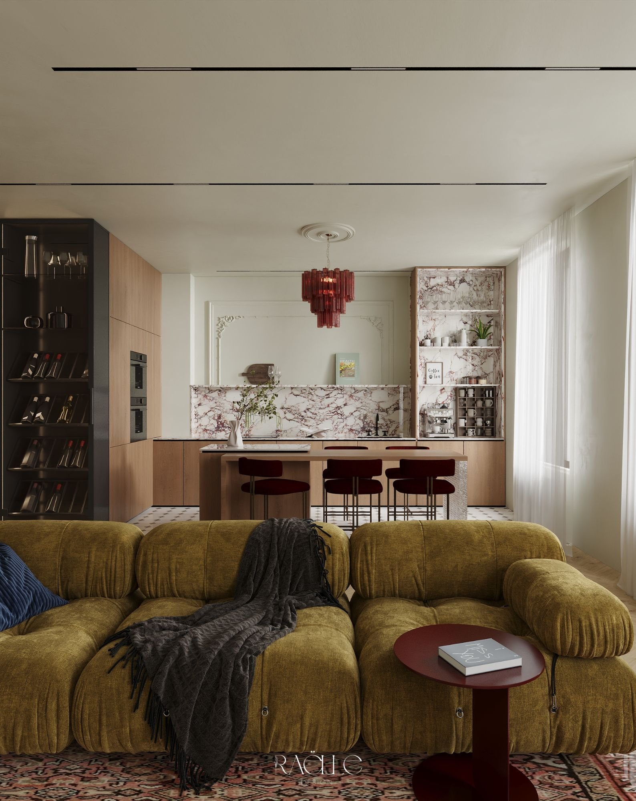
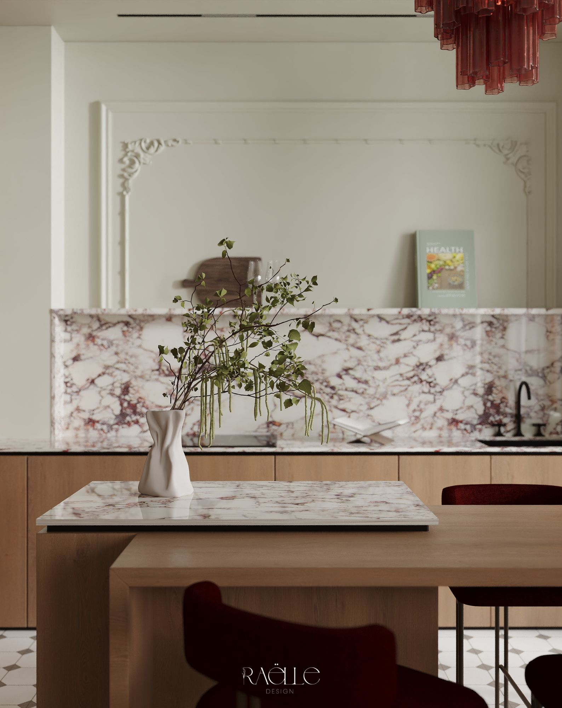
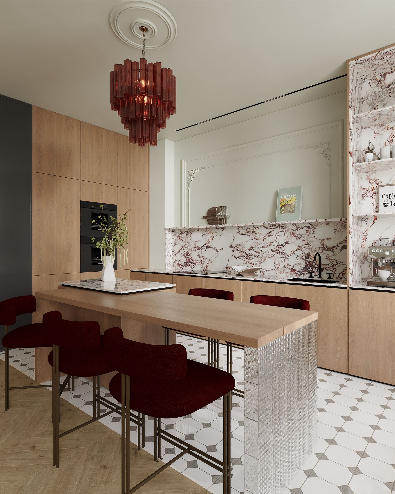
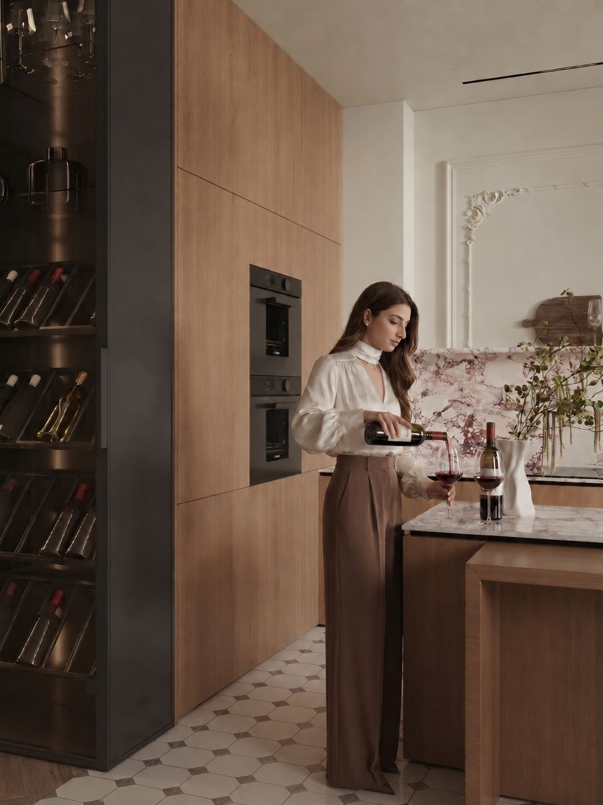
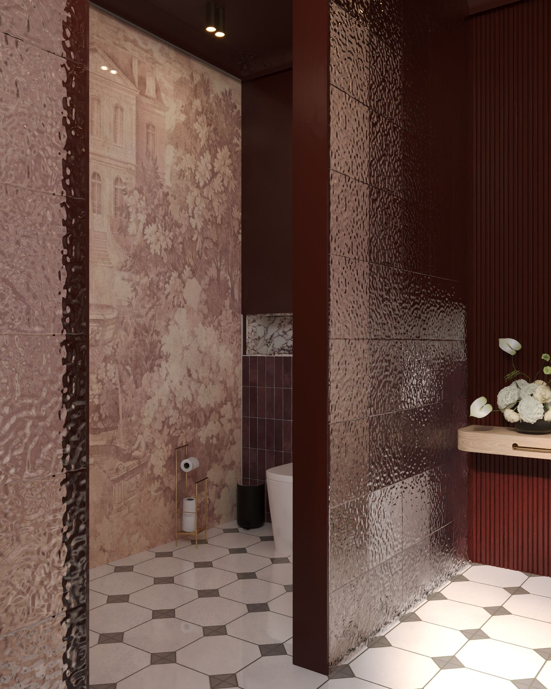
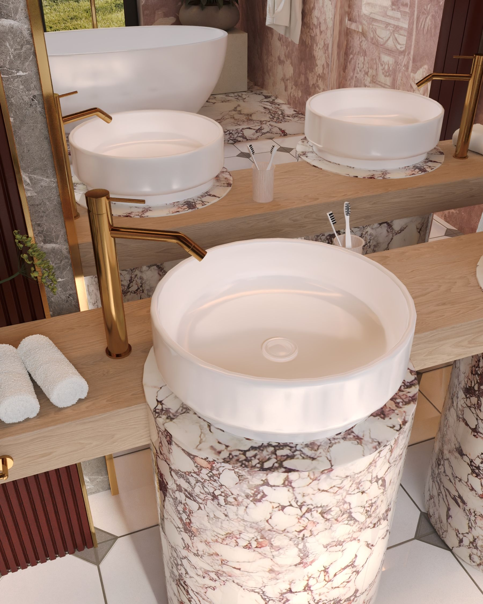
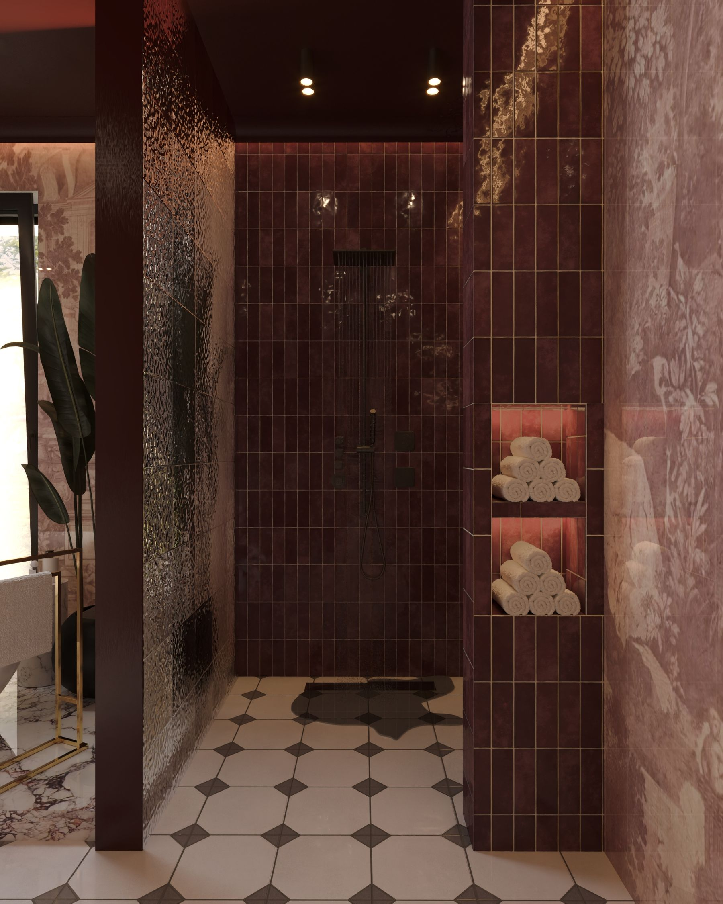
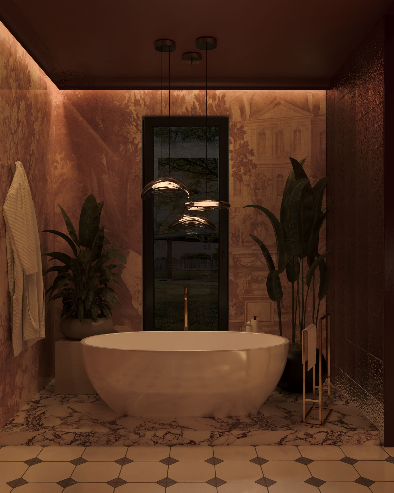
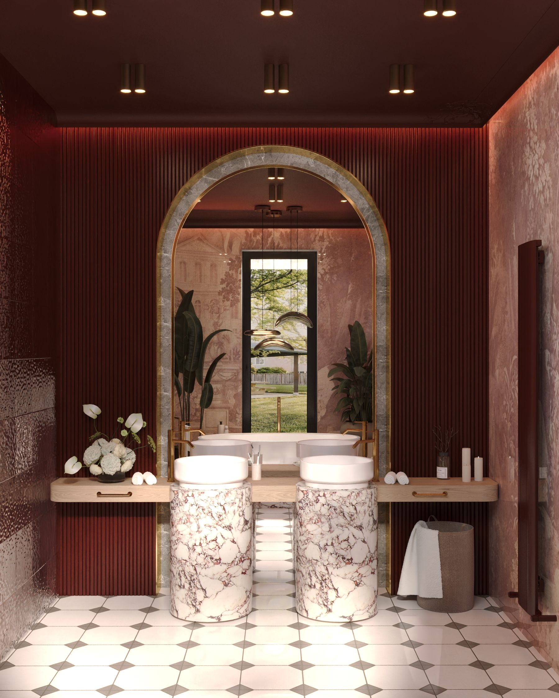
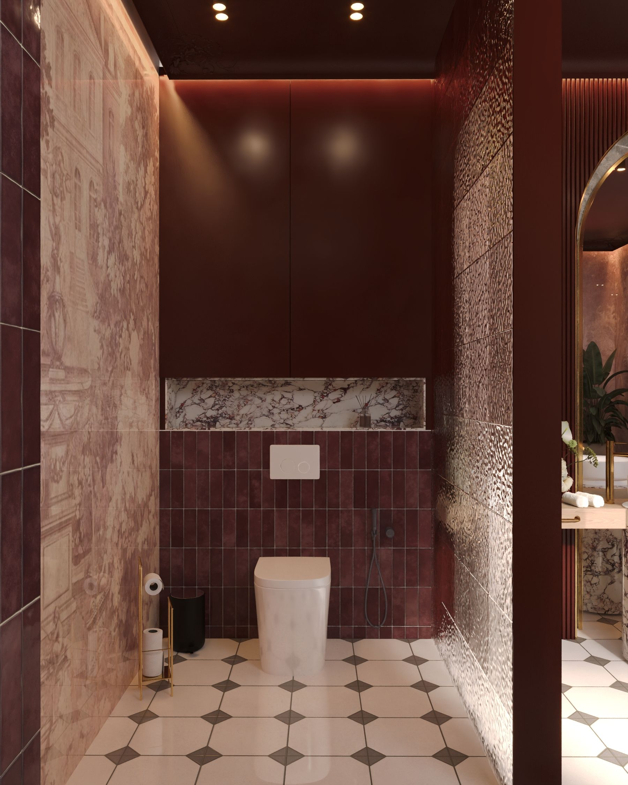

Residential — Bucharest, 2026
One wine-dark palette, carried from the kitchen island to the bathwater.

Olive bouclé, one red chandelier
Living
An olive velvet sectional anchors the seating end of the apartment — deliberately muted, so the red glass chandelier over the kitchen island stays the only saturated color you see from the sofa.
Kitchen
The rosso-veined slab on the backsplash was chosen before the cabinetry, the chairs, or the light fixture. Oak, black steel, and red velvet were each picked afterward, to sit quietly next to the stone.

Backsplash and island, one slab

A textured glass-block base holds the oak counter — the one surface in the room built to be touched.

Before dinner, not during it
Ritual
The island isn't built for a full dinner service — it's built for the ten minutes before one, when a bottle gets opened and everyone ends up leaning on the counter instead of sitting down.
Threshold
Past the kitchen, the palette turns inward. A polished bordeaux tile catches light on purpose, marking the corridor where the apartment stops being a kitchen and starts being a bath.

The corridor into the bath

Same slab as the kitchen island
Primary Bath
The pedestals are cut from the same marble as the kitchen — the one material that appears in every room of the apartment. An eighteenth-century-style toile print, chosen for its garden scenes rather than its history, wraps the tub and the sinks in a single unbroken wall.

No glass door — just a change in tile height and a step down, so the wet room reads as part of the same space.
Evening
At night, the room runs on the three bronze pendants alone. The wallpaper goes from pattern to pure texture — you stop reading the garden scene printed on it and start seeing only the color underneath.

The tub, after dark
Details


Ți-a plăcut acest proiect? Rezervă o consultanță gratuită și hai să dăm viață ideilor tale împreună!
Contactează-mă